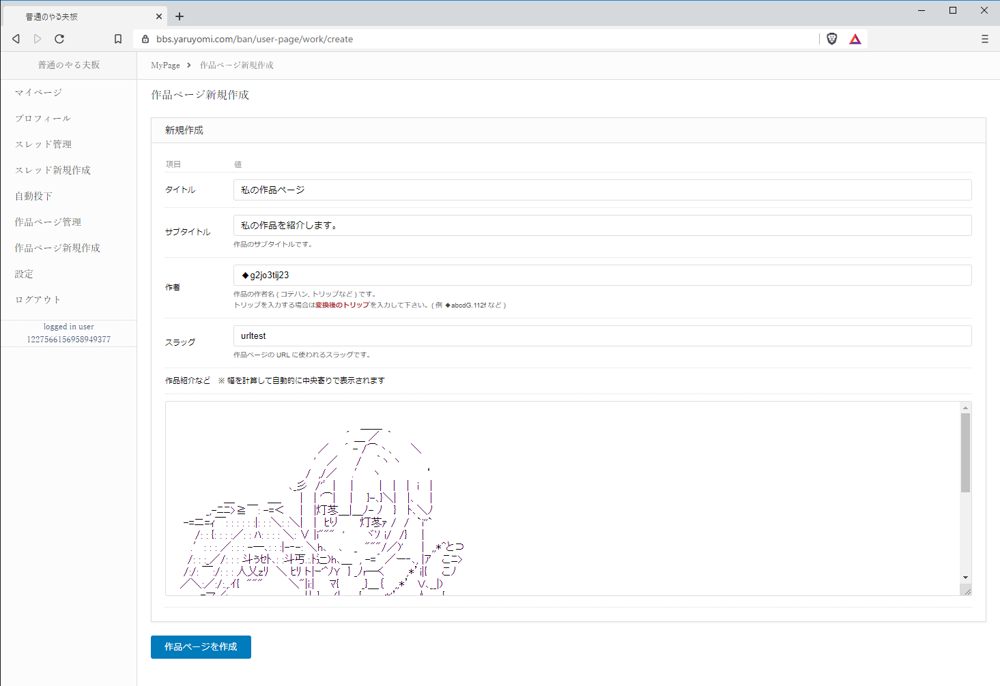
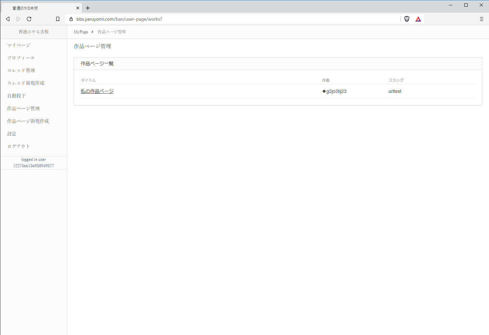

5. 作品ページの作成方法¶
5.1. 「作品ページ新規作成」ページを表示¶
ユーザーページへログインし、「作品ページ新規作成」を押下します。
以下を入力します。
項目 |
説明 |
|---|---|
タイトル |
作品ページのタイトルです。 |
サブタイトル |
作品ページのサブタイトルです。 |
作者 |
作者名です。トリップを入力する際は、変換後の値を入力して下さい。 |
スラッグ |
作品ページのURLに使用される文字列です。半角英数字で入力して下さい。 |
作品紹介など |
作品ページの紹介です。AA可能です。 |
5.2. 新規作成¶
入力後、下部にある「作品ページを作成」ボタンを押下します。
確認ダイアログが表示されますので、「OK」を押下します。
作品ページの作成が完了するとメッセージが表示されます。
この時、エラーが表示された場合はエラー内容に従って入力内容を修正して下さい。
もし、「その他のエラー」といったエラーの内容がわからないメッセージが表示された場合は、再度お試しいただくか管理人に連絡下さい。
5.3. 作成完了¶
作成完了後、自動的に「作品ページ管理」ページへ遷移します。
作成した作品ページが表示されていることを確認して下さい。